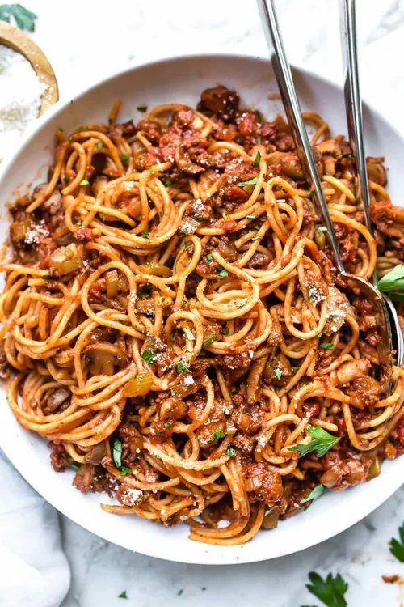

Homemade Spaghetti

Discription
These homemade Spaghetti-O's are an elevated version of the childhood classic, enhanced with a tasty sauce and Italian-style meatballs.
Ingredients
16 ounces ring-shaped pasta
1 tablespoon Cantanzaro herbs
1 teaspoon salt or to taste
1/2 teaspoon freshly ground black papper
16 ounces Italian-style meatballs
1/2 cup freshly shaved Parmesan cheese or as need.
Steps
Fill a large pot with lightly salted water and bring to a rolling boil. Stir in pasta and return to a boil. Cook, uncovered, stirring occasionally, until tender yet firm to a bite, about 8 minutes. Reserve 1/2 cup pasta water, drain pasta, and set aside.
Add tomato suace, Cantanzaro herbs, sugar, salt and papper to pot, bring to a simmer over medium-low heat.
Meanwhile, cut each meatballs into 4 pieces. Roll each pieace into a mini meatball. Drop into sauce, simmer until trought, about 10 minutes. If sauce seems to thin out by adding pasta water, 1 tablespoon at a time.
Stir coocked pasta rings. Garnish with basil leaves and Parmesan shavings and serve immediatly.